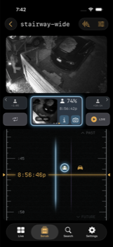

Applies to: iOS and iPadOS 26 / macOS 26.5 / scrub previews need the sidecar
Scrub
On this page
Scrub is a vertical reel of recorded footage that you drag through, with the nearest event riding along above it.

Images to find, video to confirm
The reel is built on still frames, not video. Finding the moment you want is an image problem: you recognise a shape in a thumbnail far faster than you can wait for a clip to seek and buffer. So Elsinore lets you travel through hours of still frames at whatever speed you want, and only plays video once you have found the second you care about.
Frames come from the sidecar's scrub cache. Against bare Frigate the reel still works, but without pre-rendered previews it is much less fluid.
Travelling
Dragging is the only way to move. The reel itself is fixed at one second per row; what a drag changes is how far you travel per row, and the app picks that automatically from how you are dragging. A slow, careful drag steps second by second. A fast flick covers hours.
Underneath, travel steps along a fixed ladder of spans: 1 second, 5 seconds, 1 minute, 5 minutes, 15 minutes, 1 hour. A finer Frame rung, roughly a tenth of a second, is available from the reel's controls shade for when you need to step actual video frames.
Rows snap to real preview frames where a row is a minute or less. Above that the grid wins, because there is no frame for every position.
Object activity draws in the margin as coloured spans for person, vehicle, animal, and package, at spans of ten minutes or less. Above that a span would be a few pixels tall, so the app draws per-lane counts instead.
Four sliders in the Scrub feel controls shade tune the drag: Precision, Travel, Swipe threshold, and Event drag. They apply to every camera.
The dossier card
Above the reel sits a card for the nearest event. When you are parked on an event it is lit; when you are not, it is a ghost you can tap to travel to it. It shows the snapshot, the subject, a confidence figure, and the time, plus a relative age pill on the crop.
The card has two action tiles:
- i: opens the event's detail page, which is also one of the doors into Investigate.
- Camera: a menu of the other cameras that saw the same object, each with a signed time offset from where you are now. Pick one to jump to that camera at that moment. Disabled while loading, and when nothing else saw it.
Long-press the lit card for Investigate this moment, which opens Investigate at the time the cursor is sitting on rather than at the event's start.
Previous and Next chips step between events on this camera. If a camera's newest event is older than a threshold you set in Settings › Appearance & Display › Hide event controls after, those chips and the card hide themselves rather than advertising stale history.
The LIVE chip
The LIVE chip turns green when you are following within a minute of the live edge. Otherwise it shows a signed offset: how far back in the recording you currently are. Tapping it returns you to live.
Gap cards
Between events the reel shows gap cards: SWIPE LEFT, SWIPE RIGHT, or SWIPE LEFT OR RIGHT, with chevrons that fade in three steps toward the direction that has something in it. PAST and FUTURE hint bands mark which way is which. They exist so an empty stretch of reel tells you where to go rather than looking broken.
Exporting a clip
The controls shade carries the export flow. Set a start and an end with the handle chips, then tap Export. A confirmation offers Export to Photos or Timelapse (25x), depending on what the span supports. Progress shows while it renders, with cancel and retry.
Export writes to Photos, so it needs add-only Photos permission. If that is denied the app says so and offers to open Settings.
Mac
On Mac the reel is driven by trackpad and keyboard as well as by dragging, and the controls live in a transport bar rather than a shade. The keyboard commands are listed on the Mac page.